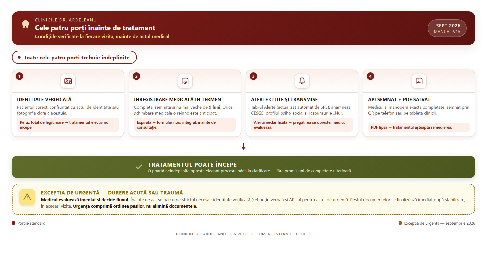
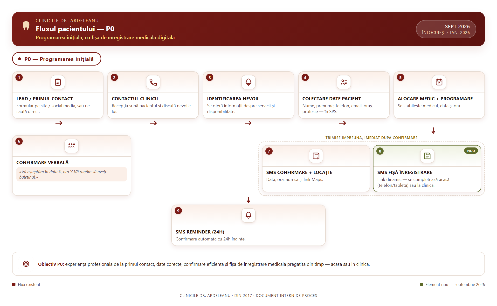
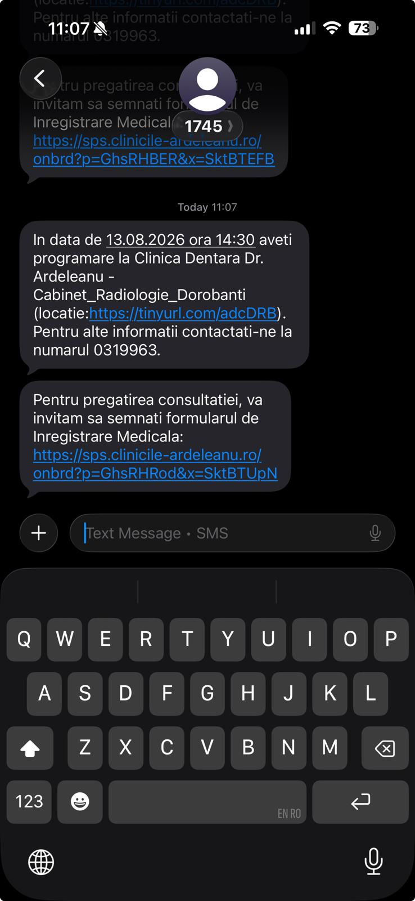
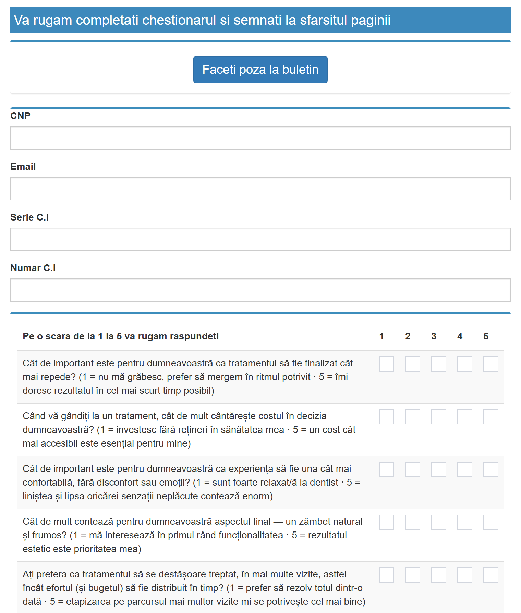
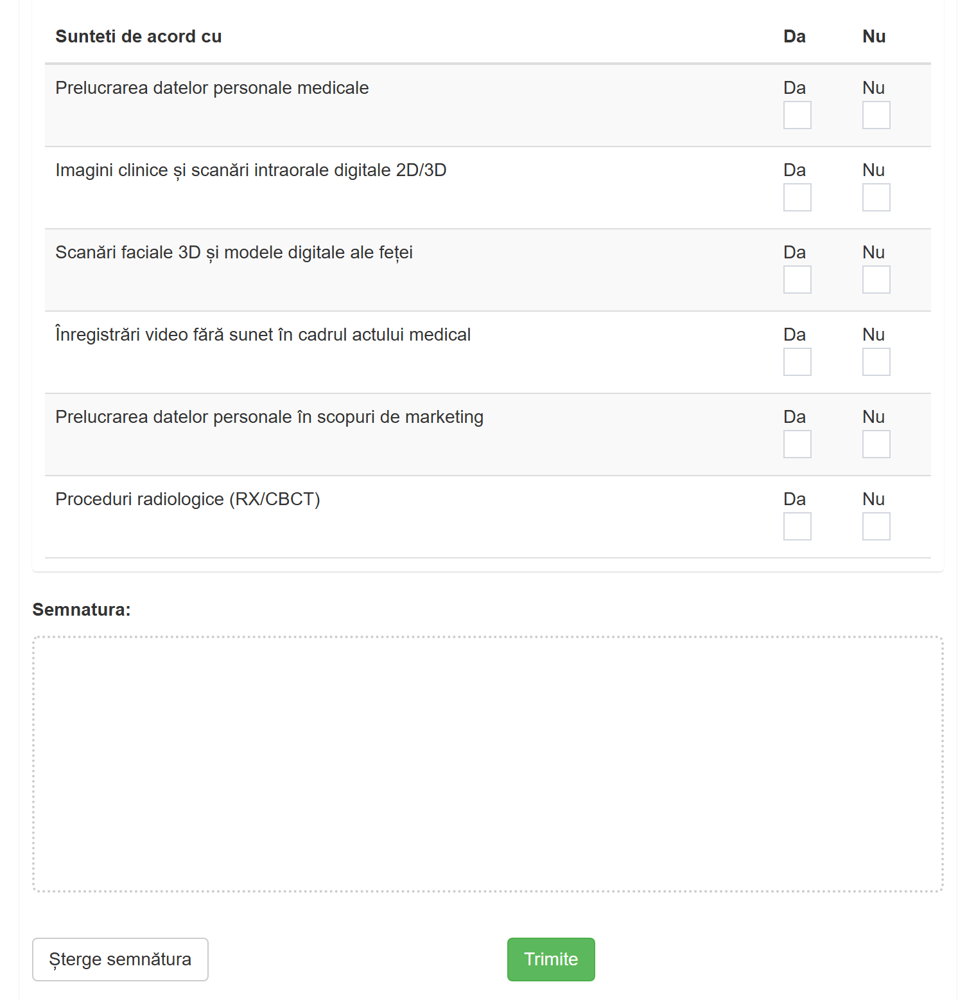
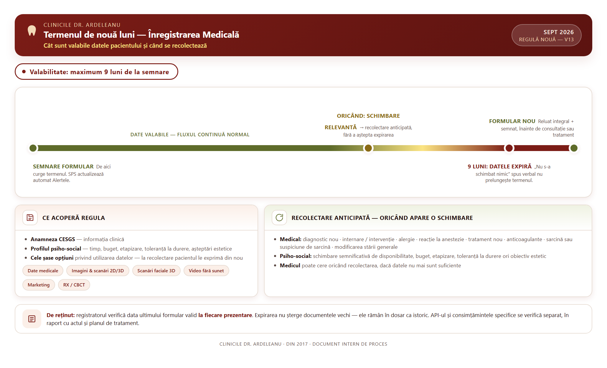
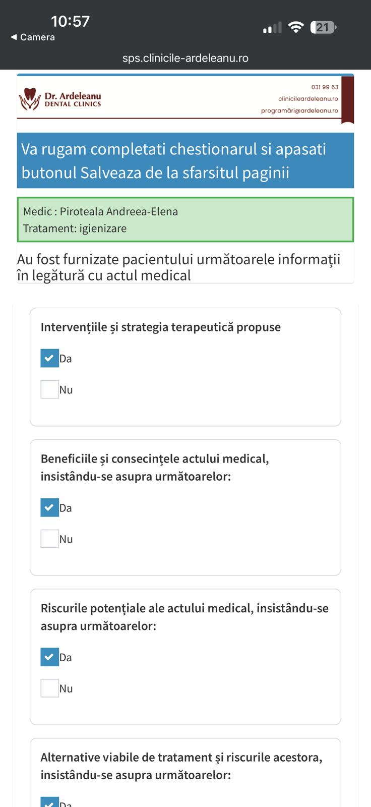
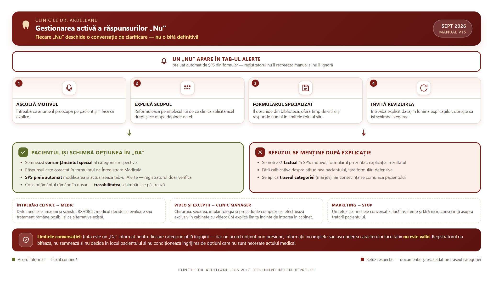

Poziție în ierarhia documentelor
Poziție în ierarhia documentelor. Prezenta procedură este un document de lucru operațional al rețelei, subordonat Regulamentului intern și administrat prin Registrul online al documentelor interne (ADC-REG-01). Nu modifică RI, contractul individual de muncă ori drepturile prevăzute de lege. Se aplică împreună cu Manualul Registratorului Medical, Manualul Asistentului Medical și procedurile conexe la care face trimitere.
Ideea centrală. Onboardingul nu este o succesiune de formulare, ci procesul prin care pacientul este cunoscut, înțeles și pregătit pentru un act medical sigur. Fiecare coleg preia responsabilitatea de la etapa anterioară și o predă mai departe numai după ce informația este completă.
Datele documentului
| Cod / titlu | ADC-ONB-01 — Procedura de onboarding al pacientului (manual narativ P0–P2) |
| Versiune / statut | V18 · septembrie 2026 |
| Proprietar funcțional | Vlad Ardeleanu, împreună cu echipa de management al clinicilor |
| Destinatari | Registratori medicali (recepție), asistenți medicali, medici, Clinic Manageri |
| Documente conexe | Manualul Registratorului Medical (ADC-REC-01) · Manualul Asistentului Medical (ADC-ASM-03) · Procedura Radiologie/Imagistică și PACS (ADC-PAC-01) · Procedura de prevenire și recuperare a anulărilor · Procedura „Identificarea pacientului care refuză legitimarea” · Procedura pentru vizualizarea investigației CBCT |
| Sursă | Procedura onboarding pacient — manual narativ P0–P2, v18 (docx), integrată integral |
IntroducereDe ce avem nevoie de un singur flux
Un pacient nu trebuie să simtă că trece de la un birou la altul. El trebuie să simtă că aceeași echipă îl însoțește de la primul telefon până la finalul tratamentului.
Onboardingul începe înainte ca pacientul să intre în clinică. Prima conversație, calitatea datelor introduse în SPS, mesajele de confirmare și posibilitatea de a completa documentele de acasă pregătesc consultația. Când această etapă este făcută corect, recepția nu mai lucrează sub presiune, asistenta primește un pacient pregătit, iar medicul poate dedica timpul consultației deciziei clinice și dialogului.
Procedura urmărește patru momente ale aceleiași călătorii: P0, programarea inițială; P1A, primirea la recepție; P1B, consultația și pregătirea tratamentului în cabinet; P2, tratamentele și vizitele ulterioare. Între aceste momente există predări de responsabilitate. O predare este corectă numai când următorul coleg primește atât pacientul, cât și informația necesară pentru a continua în siguranță.
Planul de tratament se construiește, ca principiu, la P1, dar finalizarea lui poate avea loc și la P2. La o parte semnificativă dintre pacienți există justificări reale pentru care planul nu poate fi încheiat la P1 — investigații suplimentare, analize, timp de reflecție sau etapizarea deciziei. De aceea, obiectivul clinicii nu se măsoară doar la P1: privite împreună, P1 și P2 trebuie să conducă la un plan de tratament complet pentru toți pacienții care parcurg aceste două programări. P1 rămâne momentul preferat pentru plan, iar P2 este plasa de siguranță care îl închide atunci când există o justificare pentru amânare.
Recepția și asistenta au un rol activ, dar diferit de rolul medicului. Ele verifică documentele, observă neconcordanțele, explică pașii administrativi și transmit alertele. Nu interpretează clinic și nu decid tratamentul. Medicul analizează informația, stabilește indicația, explică actul și decide ce poate fi realizat dacă pacientul refuză o investigație ori un tip de prelucrare necesar tratamentului.
CELE PATRU PORȚI. Înainte de tratament trebuie să fie îndeplinite patru condiții: identitatea este verificată; Înregistrarea Medicală este completată, semnată și se află în termenul maxim de nouă luni; alertele au fost citite și transmise; API-ul corect este semnat și salvat în PDF.
EXCEPȚIA DE URGENȚĂ. În durere acută sau traumă, medicul evaluează pacientul imediat și decide fluxul. Înainte de act se parcurge strictul necesar: identitatea este verificată, cel puțin verbal, iar API-ul pentru actul de urgență este semnat. Restul documentelor — Înregistrarea Medicală completă și consimțămintele aferente — se finalizează imediat după stabilizare, în aceeași vizită. Urgența comprimă ordinea pașilor, nu elimină documentele.

Secțiunea 1P0 — programarea inițială
P0 transformă un contact într-o programare clară și într-un pacient pregătit să intre în relația medicală.

1.1 De la lead la conversația cu recepția
Primul contact poate veni prin formularul de pe site, din social media sau printr-un apel direct. Indiferent de canal, recepția trebuie să preia conversația într-o manieră umană. Nu este suficient să întrebe ce zi dorește pacientul. Trebuie să înțeleagă motivul prezentării, urgența percepută de pacient, serviciul căutat și eventualele întrebări care îl împiedică să ia o decizie.
Detaliile lead-urilor — numele, prenumele și datele de contact — se află deja în fișierul de lucru Excel la care registratorii au acces în fiecare dimineață. Fișierul este gestionat la nivelul infrastructurii Dr. Ardeleanu, pe linia mai multor departamente — call center, marketing și celelalte canale prin care intră lead-urile — astfel încât recepția pornește conversația cu datele de bază deja pregătite. În paralel, lead-urile intră și direct, inbound telefonic, iar registratorul preia aceste apeluri cu aceeași atenție ca pe orice lead din fișier.
În această etapă recepția oferă informații despre serviciile clinicii și despre disponibilitate, fără să promită un diagnostic sau un anumit rezultat. Dacă nevoia descrisă depășește ceea ce poate clarifica recepția, întrebarea se transmite unui medic sau Clinic Managerului, iar pacientul primește un răspuns ulterior. Scopul nu este închiderea rapidă a apelului, ci programarea corectă de la prima încercare.
1.2 Datele de bază și alocarea medicului
După clarificarea nevoii, în SPS se introduc numele, prenumele, telefonul, adresa de e-mail, orașul și profesia. Datele trebuie repetate sau confirmate, mai ales numărul de telefon și adresa de e-mail, deoarece acestea vor fi folosite pentru mesajele automate, documente și comunicări ulterioare. O literă greșită sau o cifră inversată poate rupe întregul flux digital.
Recepția alocă medicul potrivit și stabilește data și ora în calendarul clinicii. Confirmarea verbală trebuie să fie explicită: pacientului i se repetă ziua, ora, clinica și recomandarea de a sosi cu câteva minute înainte. O programare este considerată completă numai când informațiile din SPS și cele comunicate pacientului coincid.
Tot la P0 telefonic, registratorul îl informează pe pacient că trebuie să vină în clinică cu actul de identitate — cartea de identitate — și să se identifice la sosire. Formularea recomandată este simplă: „Nu uitați să vă aduceți actul de identitate cu dumneavoastră la clinică, pentru înregistrarea medicală.”
1.3 Mesajele automate și Înregistrarea Medicală
După confirmarea verbală, pacientul primește SMS-ul cu data și ora programării, denumirea clinicii, linkul către locație și numărul de contact. Acest mesaj este urmat de un al doilea SMS, trimis în pereche, prin care pacientul este invitat să completeze formularul de Înregistrare Medicală. Linkul este dinamic și îl conduce direct către documentul aferent pacientului.

Pentru instruire și exerciții interne, formularul poate fi parcurs pe pacientul de test al clinicii — un dosar de test, fără probleme de GDPR — folosind linkul dinamic de mai jos, care rămâne activ și poate fi accesat direct: https://sps.clinicile-ardeleanu.ro/onbrd?p=GhsRHRod&x=SktBTUpN. Exercițiul se face exclusiv pe pacientul de test, niciodată pe un dosar real.



Varianta preferată este completarea de acasă, pe telefonul sau tableta pacientului. Aceasta îi oferă timp să citească întrebările, să verifice informațiile medicale și să ia decizii fără presiunea recepției. Dacă nu poate sau nu dorește să completeze acasă, formularul rămâne disponibil în clinică, pe dispozitivul pus la dispoziție. Recepția poate explica sensul unei întrebări și poate oferi ajutor tehnic, dar nu completează răspunsurile și nu semnează în locul pacientului.
Cu 24 de ore înainte de programare, SPS trimite reminderul, exclusiv în format SMS — un mesaj de telefonie mobilă, nu e-mail și nu o aplicație de mesagerie. Dacă pacientul spune că nu a primit mesajele, recepția verifică în primul rând numărul de telefon și apoi reia trimiterea, tot exclusiv prin SMS, prin fluxul disponibil în SPS. În această situație trebuie verificat și dacă linkul de Înregistrare Medicală aparține pacientului corect.
1.4 Anulările și neprezentările
O programare pierdută nu se abandonează. Când pacientul anunță că nu mai poate ajunge, recepția încearcă reprogramarea pe loc, propunând imediat variante alternative. Pacientul care nu s-a prezentat și nu a anunțat este contactat în dimineața zilei următoare, iar motivul și rezultatul apelului se înregistrează în SPS. Detaliile complete — scripturile de conversație, apelurile preventive pentru procedurile complexe, evidența și indicatorii — sunt stabilite în Procedura de prevenire și recuperare a anulărilor și neprezentărilor, care se aplică integral alături de prezenta procedură. Procedura se regăsește în Manualul Registratorului Medical, capitolul „Responsabilități și activități legate de activitatea de vânzare”, secțiunea „Reducerea Ratei Anulărilor/Neprezentărilor [KPI 2]”.
Registratorul realizează, în plus, prevenția neprezentărilor pentru lucrările importante. Pentru manoperele majore de implantologie, endodonție și protetică — în special atunci când medicul care efectuează tratamentul nu este din zonă sau se deplasează din București — pacienții sunt sunați în prealabil pentru confirmarea verbală a prezenței în clinică. Acest apel de confirmare se face în plus față de fluxul standard de remindere și de gestionarea anulărilor.
Secțiunea 2P1A — sosirea și primirea la recepție
Recepția nu predă cabinetului doar un nume din calendar, ci un pacient identificat și un dosar pregătit pentru consultație.
2.1 Întâmpinarea și verificarea programării
La sosire, pacientul este întâmpinat și identificat în programarea din SPS. Se verifică numele, medicul, serviciul, data și ora. Dacă există pacienți cu nume similare sau informații contradictorii, pregătirea se oprește până când identitatea programării este clarificată. Această verificare simplă previne asocierea documentelor sau a tratamentului cu dosarul greșit.
2.2 Identitatea și fotografia cărții de identitate
În fluxul standard, identitatea se confruntă cu actul prezentat, iar imaginea cărții de identitate se păstrează prin primul buton al formularului de Înregistrare Medicală, denumit „Fotografie carte de identitate”. Fotografia nu înlocuiește verificarea vizuală; ea documentează datele pe baza cărora a fost creat dosarul pacientului.
Identificarea pacientului nu este o formalitate administrativă, ci o obligație cu temei legal. Medicul își asumă actul medical și trebuie să știe cu certitudine cui acordă tratamentul, pe numele cui întocmește documentele medicale și cine își exprimă consimțământul; verificarea previne atribuirea greșită a informațiilor medicale și îl protejează în primul rând pe pacient. Bază legală: Codul deontologic al medicului stomatolog — art. 17, 34, 48, 50 și 54, privind asumarea actului medical, evidența medicală și eliberarea documentelor persoanei îndreptățite; Legea nr. 46/2003 privind drepturile pacientului — consimțământul informat și confidențialitatea; GDPR, art. 5 alin. (1) lit. d) și f) — exactitatea datelor și integritatea și confidențialitatea prelucrării, care impun ca dosarul medical să aparțină cu certitudine persoanei corecte.
Dacă pacientul nu are documentul fizic asupra lui, este rugat să arate o fotografie clară a cărții de identitate pe telefon. În majoritatea cazurilor, aceasta permite verificarea datelor și continuarea fluxului. Dacă pacientul acceptă, fotografia necesară dosarului este preluată prin formular. Dacă refuză numai păstrarea copiei, clinica face un pas în spate: recepția verifică vizual identitatea, nu păstrează imaginea și notează refuzul. Pacientul poate continua dacă identitatea a putut fi stabilită.
Refuzul legitimării este o situație diferită. Atunci când pacientul refuză să permită orice verificare a identității, tratamentul electiv nu începe. Recepția explică calm că documentele medicale, consimțămintele și actele efectuate trebuie asociate persoanei corecte. Dacă refuzul persistă, cazul este transmis Clinic Managerului și medicului înainte de orice continuare.
Regula de lucru stabilită prin procedura transmisă de departamentul juridic separă clar cele două situații: refuzul păstrării copiei actului poate fi acceptat, la cererea expresă a pacientului; refuzul verificării vizuale a originalului sau al completării datelor obligatorii P0/P1 blochează onboardingul — fără acestea nu se poate finaliza Înregistrarea Medicală, iar consultația sau actul medical electiv nu poate începe. Recepția nu spune „trebuie să ne lăsați copia”, ci „putem renunța la copie, dar trebuie să verificăm actul și să completăm datele necesare”. Recepția nu decide dacă există o urgență și nu formulează singură un refuz medical: înainte de orice amânare, medicul confirmă că nu există o urgență. Scripturile complete de conversație sunt stabilite în procedura dedicată „Identificarea pacientului care refuză legitimarea”, care se aplică alături de prezenta procedură.
2.3 Înregistrarea Medicală și tab-ul Alerte
Recepția verifică dacă formularul este complet, semnat și salvat. În versiunea în curs de dezvoltare a SPS, formularul nu va putea fi trimis cu câmpuri necompletate: sistemul va impune un răspuns la fiecare întrebare, astfel încât fiecare dintre cele șase opțiuni va avea întotdeauna un răspuns explicit „Da” sau „Nu”. Până la activarea acestei validări, recepția verifică manual că nicio opțiune nu a rămas fără răspuns. Dacă este incomplet, pacientul îl finalizează în clinică. După trimiterea formularului, SPS preia automat răspunsurile și actualizează tab-ul Alerte. Registratorul nu generează manual alertele și nu recopiază informațiile din formular.
Tab-ul Alerte, actualizat automat de SPS din formularul de Înregistrare Medicală, reunește trei categorii, în ordinea în care apar în tab. Prima secțiune este profilul psiho-social, care descrie preferințele și limitele pacientului. A doua secțiune este anamneza — informația clinică din Anamneza-CESGS (Chestionarul de Evaluare a Stării Generale de Sănătate, denumirea cerută de Colegiul Medicilor). A treia secțiune este consimțământul privind prelucrarea datelor exprimat de pacient — în tab apar în special răspunsurile „Nu” la cele șase opțiuni din formular privind utilizarea datelor: prelucrarea datelor personale medicale; imaginile clinice și scanările intraorale digitale 2D/3D; scanările faciale 3D și modelele digitale ale feței; înregistrările video fără sunet în cabinet; prelucrarea datelor în scop de marketing; procedurile radiologice RX/CBCT. Recepția citește informația deja preluată de sistem și o transmite asistentei. Nu stabilește dacă o boală este relevantă și nu negociază tratamentul; se asigură că informația ajunge la cabinet înaintea pacientului.
2.4 Valabilitatea informațiilor: maximum nouă luni
Clinica stabilește un termen intern maxim de valabilitate de nouă luni pentru informațiile colectate prin formularul de Înregistrare Medicală. Termenul curge de la data completării și semnării celui mai recent formular. La împlinirea celor nouă luni, datele nu mai sunt considerate suficient de actuale pentru a fundamenta o nouă decizie clinică, chiar dacă pacientul declară verbal că „nu s-a schimbat nimic”. Formularul trebuie reluat integral și semnat din nou înainte de continuarea fluxului medical.

Regula celor nouă luni se aplică informațiilor din Anamneza-CESGS, profilului psiho-social și celor șase opțiuni privind prelevarea și utilizarea datelor pacientului. La recolectare, pacientul își exprimă din nou opțiunile. Dacă anterior a existat un răspuns „Nu” urmat de un consimțământ special, noul formular și, după caz, consimțământul special aferent trebuie reconfirmate; o alegere veche nu este presupusă automat ca fiind încă actuală.
Formularul se reia mai devreme de nouă luni ori de câte ori pacientul anunță sau echipa identifică o schimbare relevantă: diagnostic nou, internare, intervenție, alergie, reacție la anestezie, tratament medicamentos nou, anticoagulante, sarcină sau suspiciune de sarcină, modificarea stării generale, schimbarea semnificativă a disponibilității, bugetului, etapizării, toleranței la durere ori a obiectivului estetic. Medicul poate solicita în orice moment o recolectare anticipată dacă informațiile existente nu mai sunt suficiente.
Registratorul medical verifică la fiecare prezentare data ultimului formular valid. Dacă au trecut nouă luni sau există un motiv de actualizare anticipată, pacientul completează un formular nou înainte de consultație ori tratament. După trimitere, SPS preia automat noile răspunsuri și actualizează tab-ul Alerte. Registratorul verifică actualizarea și transmite asistentei orice diferență importantă față de formularul anterior.
Expirarea termenului operațional nu înseamnă ștergerea documentelor vechi. Formularele și consimțămintele anterioare rămân în dosarul medical ca istoric și dovadă a informației disponibile la momentul respectiv. Regula de nouă luni privește actualitatea datelor folosite pentru continuarea îngrijirii. API-ul și consimțămintele aferente unor tratamente specifice se verifică separat, în raport cu actul, medicul și planul de tratament.
POARTA RECEPȚIEI. Pacientul este predat cabinetului numai după clarificarea identității, verificarea faptului că Înregistrarea Medicală este completă și în termenul maxim de nouă luni și transmiterea alertelor.
Secțiunea 3P1B — consultația și construirea planului
Consultația începe cu înțelegerea pacientului, nu direct cu propunerea unei manopere.
3.1 Informația clinică și profilul psiho-social
Medicul citește informația din Anamneza-CESGS și o corelează cu examinarea clinică. Rolul acestui document este deja cunoscut echipei și nu trebuie dublat prin explicații administrative. Important este ca datele să fie actuale, iar orice răspuns care poate schimba conduita să fie discutat înaintea actului medical.
În paralel, SPS extrage automat din formularul de Înregistrare Medicală elementele profilului psiho-social și le afișează în tab-ul Alerte. Aceste informații arată cât timp poate aloca pacientul, ce limitări bugetare are, dacă preferă etapizarea, cum percepe durerea, ce experiențe negative a avut și cât de important este rezultatul estetic. Ele nu sunt simple detalii comerciale. Folosite corect, îl ajută pe medic să formuleze un plan realist, să aleagă ritmul potrivit și să explice tratamentul într-o manieră pe care pacientul o poate accepta și urma.
Un pacient cu anxietate mare poate avea nevoie de o consultație mai lentă și de explicații suplimentare. Un pacient cu timp limitat poate prefera ședințe mai lungi și mai puține. Un buget restrâns poate impune etapizarea, fără ca standardul medical să fie compromis. O așteptare estetică foarte precisă trebuie discutată înainte de începerea tratamentului, nu descoperită la final.
3.2 Verificarea asistentei
Înainte ca medicul să înceapă actul, asistenta face propria verificare de siguranță. Ea urmărește în special alergiile, reacțiile adverse la anestezie, bolile cardiace, tratamentul anticoagulant, sarcina, bolile cronice relevante și orice risc medical crescut. La fel de important, observă anxietatea, experiențele negative, toleranța la durere și așteptările care pot influența experiența pacientului.
Verificarea asistentei include și componenta fizică: înainte de primirea pacientului, asistenta verifică și pregătește cabinetul pentru programarea respectivă — igienizarea și dezinfecția suprafețelor, instrumentarul și materialele necesare manoperelor planificate, funcționarea echipamentelor. Pașii compleți sunt stabiliți în secțiunea „Igiena și pregătirea cabinetului” din Manualul Asistentului Medical, care se aplică integral; pacientul nu este introdus în cabinet înainte ca pregătirea să fie încheiată.
Asistenta nu interpretează aceste date și nu decide dacă un tratament este permis. Ea îi spune medicului clar, complet și rapid ce a observat. Atunci când informația schimbă conduita sau trebuie urmărită ulterior, aceasta se documentează în SPS. Dacă o alertă nu a fost clarificată, pregătirea se oprește până când medicul o evaluează.
3.3 Consultația și indicația
Medicul discută motivul prezentării, examinează pacientul și stabilește indicația. Planul trebuie explicat într-un limbaj pe care pacientul îl poate înțelege, incluzând scopul, etapele, limitele, riscurile relevante și alternativele aplicabile. Profilul psiho-social îl ajută pe medic să transforme un plan corect medical într-un plan posibil pentru pacient.
Consimțământul informat nu este obținut prin grăbire sau prin repetarea mecanică a unei formule. Pacientul trebuie să aibă posibilitatea de a pune întrebări și, dacă este nevoie, de a cere timp. Semnătura confirmă o conversație și o decizie, nu o înlocuiește.
Secțiunea 4API — Acordul Pacientului Informat
API-ul leagă explicația medicului de actul concret care urmează să fie efectuat. Este un document transversal: se întocmește la P1B și se semnează din nou la fiecare vizită P2.
După stabilirea indicației, medicul completează în API numele medicului care efectuează tratamentul și denumirea exactă a manoperei. O descriere generică nu este suficientă dacă pacientului urmează să i se efectueze un act precis. Documentul trebuie să corespundă conversației din cabinet și tratamentului planificat pentru acel moment.
Pacientul primește documentul prin codul QR și îl semnează, de regulă, pe propriul telefon. Dacă apar dificultăți tehnice sau pacientul nu poate utiliza telefonul, documentul este deschis pe tableta clinicii. Indiferent de dispozitiv, asistenta verifică dacă semnătura a fost înregistrată și dacă PDF-ul se află în SPS.


REGULA CRITICĂ. Tratamentul începe numai după semnarea API-ului și salvarea PDF-ului, înainte ca pacientul să fie așezat pentru actul medical.
Regula generală este simplă: la fiecare vizită, medicul și pacientul semnează un API. În mod normal, medicul trece în API toate tratamentele și manoperele pe care urmează să le efectueze pacientului în vizita respectivă, astfel încât, din momentul în care pacientul se așază pe scaunul stomatologic și până se ridică, toate manoperele realizate să fie acoperite de acordul semnat înainte de începerea actului. Există însă situații în care nu toate manoperele pot fi cuprinse într-un singur document; atunci se semnează mai multe API-uri în aceeași vizită. Procesul este facil atât pentru medic, cât și pentru pacient: semnarea se face digital, pe telefonul pacientului, în câteva momente.
Dacă planul se schimbă în timpul consultației sau al tratamentului, medicul explică schimbarea și generează documentul corespunzător înainte de continuare. Pacientul nu părăsește cabinetul după un tratament modificat fără ca API-ul corect să fie semnat și salvat.
AVERTISMENT MALPRAXIS. Lipsa API-ului semnat este cauză de nulitate a asigurării de malpraxis a medicului. Termenii și condițiile polițelor de malpraxis condiționează acoperirea de existența consimțământului informat documentat; fără API, asigurarea devine, cel mai probabil, irelevantă. Regula este esențială pentru medici, dar la fel de importantă pentru asistente și registratori, care verifică existența documentului înainte de act.
Secțiunea 5P2 — tratamentul și vizitele ulterioare
Un dosar complet la prima vizită nu elimină nevoia de verificare la vizitele următoare.
La fiecare prezentare, asistenta confirmă că are pacientul corect, că programarea corespunde actului planificat și că formularul de Înregistrare Medicală se află în termenul maxim de nouă luni. Chiar dacă formularul este încă valabil, asistenta întreabă dacă au apărut modificări medicale de la ultima vizită. Pacientul poate începe un tratament nou, poate primi un diagnostic între vizite, poate începe un anticoagulant sau poate anunța o sarcină; într-o asemenea situație, formularul se actualizează mai devreme și informația ajunge la medic înainte de act.
După confirmarea actualității Înregistrării Medicale, asistenta verifică semnarea API-ului pentru vizita curentă: la fiecare vizită, medicul și pacientul semnează un API care acoperă manoperele zilei, iar dacă nu toate manoperele au putut fi trecute într-un singur document, se semnează API-uri suplimentare în aceeași vizită. Asistenta verifică totodată dacă este necesar un consimțământ specific. Termenul de nouă luni pentru formular nu înlocuiește această verificare. Ea devine cu atât mai importantă la schimbarea medicului, schimbarea specialității, începerea unei etape noi sau înaintea unei proceduri cu document dedicat. Dacă există îndoială, medicul decide documentul necesar înainte de tratament.
După act, asistenta confirmă că documentele sunt salvate, predă recepției eventualele originale pe hârtie și transmite pacientului instrucțiunile stabilite de medic. Înainte de plecare trebuie să fie clar ce s-a realizat, ce urmează și dacă există documente sau investigații care trebuie trimise.
Secțiunea 6Rolul asistentei în continuitatea fluxului
Asistenta este legătura dintre informația administrativă, decizia medicului și experiența concretă a pacientului.
Înainte de act, asistenta verifică documentele, citește alertele, confirmă existența API-ului și a consimțământului specific și îi transmite medicului riscurile relevante. Această verificare trebuie să fie activă: nu este suficient ca un document să existe dacă este incomplet, aparține altei etape sau nu acoperă manopera zilei.
În timpul consultației și al tratamentului, asistenta observă pacientul. Teama, disconfortul, o informație nouă sau o schimbare de plan trebuie aduse în atenția medicului. Asistenta nu contrazice explicația medicului și nu promite rezultate, dar poate relua pe înțelesul pacientului instrucțiunile operaționale și poate verifica dacă acesta a înțeles ce trebuie să facă.
După act, asistenta închide bucla: documentele sunt în dosar, originalele pe hârtie ajung la recepție, investigațiile sunt transmise, iar pacientul cunoaște următorul pas. Dacă lipsește o piesă, fluxul nu este abandonat în speranța că va fi completat ulterior. Este clarificat atunci când pacientul și echipa sunt încă disponibili.
ROL ACTIV, NU FORMAL. Când lipsește un document, există o alertă neclarificată sau planul nu corespunde API-ului, asistenta oprește pregătirea și cheamă medicul.
Secțiunea 7Consimțămintele specifice și arhivarea
Clinica utilizează o bibliotecă de consimțăminte pentru chirurgie și implantologie, sedare și anestezie, ortodonție, protetică, endodonție și parodontologie, estetică și injectabile, precum și pentru fotografie și documentare clinică. Personalul nu trebuie să memoreze titlurile tuturor documentelor. Înaintea unei proceduri, asistenta și medicul consultă matricea curentă din SPS sau din manualul clinicii și aleg formularul indicat.
Regula generală este semnarea digitală. Pentru categoriile marcate în matrice se păstrează și varianta pe hârtie, semnată olograf: chirurgie, sedare conștientă, protoxid de azot, toxină botulinică, acid hialuronic și PRF. Această listă a fost confirmată operațional în august 2026. Dacă lista se modifică în viitor, matricea curentă din SPS are prioritate față de memoria personalului.
După semnare, asistenta predă originalul pe hârtie recepției. Recepția îl arhivează în Biblioraftul de Consimțăminte, păstrat în biroul managerului sau în spațiul confidențial desemnat. Varianta digitală rămâne în dosarul pacientului. Pentru minori, Înregistrarea Medicală se completează și se semnează de reprezentantul legal. La introducerea CNP-ului de copil, formularul afișează automat rubricile „Nume Reprezentant” și „Prenume Reprezentant”, iar întrebările devin anamneza pediatrică. Identitatea reprezentantului legal se verifică la fel ca identitatea unui pacient adult, iar API-ul și consimțămintele specifice se semnează tot de reprezentantul legal, urmând documentul prevăzut în matrice pentru actul concret; cazurile neclare se rezolvă înainte de tratament.
Secțiunea 8RX și CBCT — comunicare și trasabilitate
Asistenta care efectuează investigația, în limitele competenței și organizării clinicii, nu este trecută pe formularul investigației. Tocmai de aceea, numele și prenumele asistentei care a realizat investigația se înscriu obligatoriu în câmpul „Observații” din SPS. Această înregistrare asigură trasabilitatea și permite echipei să știe cine a realizat etapa tehnică.
Pacientului i se spune că imaginile vor fi transmise prin e-mail, cu link către PACS-ul clinicii. PACS-ul este serverul nostru de stocare a imaginilor medicale: toate investigațiile sunt urcate și păstrate acolo în standardul DICOM. Pe PACS, clinica pune la dispoziție un cititor de imagini integrat, în versiune light, 2D, orientat în special către radiografii; CBCT-urile pot fi vizualizate în acest cititor doar într-un singur plan, adică tot 2D. Dacă pacientul sau medicul dorește citirea CBCT-ului într-o reconstrucție 3D, este necesară instalarea unui viewer compatibil, de tip medical grade, pe stația de lucru de pe care se face citirea. Medicii stomatologi care citesc în mod curent CT-uri au deja o astfel de aplicație; este posibil ca unii pacienți să semnaleze că „nu au putut deschide CT-ul” — linkul este corect și imaginile sunt acolo, dar citirea 3D cere aplicația specializată. E-mailul se trimite imediat, conform procedurii tehnice aplicabile, iar înainte ca pacientul să plece asistenta verifică primirea mesajului și obține o confirmare explicită. Simpla apăsare a butonului de trimitere nu închide sarcina dacă mesajul nu a ajuns.
Detaliile tehnice complete sunt stabilite în Procedura Radiologie/Imagistică și PACS (ADC-PAC-01): pentru pașii de lucru ai asistentei, în Manualul Asistentului Medical, secțiunea „Responsabilități în cazul radiografiilor și CT-urilor”; pentru informarea pacientului la recepție, în Manualul Registratorului Medical, secțiunea „Responsabilitățile de informare a pacientului în cadrul procedurii Radiologie/Imagistică și PACS ADC-PAC-01”.
Pentru pacient există o instrucțiune dedicată, pas cu pas: „Procedura pentru vizualizarea investigației CBCT”. Aceasta descrie deschiderea e-mailului primit, butonul „Vezi imaginile”, încărcarea platformei de vizualizare și navigarea prin secțiunile investigației cu rotița mouse-ului, cu recomandarea de a folosi un calculator sau laptop. Tot acolo sunt notate două limite pe care echipa trebuie să le cunoască: accesul prin link poate fi limitat în timp, iar vizualizarea imaginilor de către pacient nu înlocuiește interpretarea și diagnosticul medicului. Când un pacient semnalează că „nu a putut deschide CT-ul”, recepția sau asistenta îi transmite această instrucțiune ori îi parcurge pașii la telefon, înainte de a escalada problema.
Nu mai este necesar un consimțământ separat la fiecare investigație RX sau CBCT atunci când pacientul a bifat „Da” în formularul de Înregistrare Medicală, la opțiunea privind procedurile radiologice: acordul dat la înregistrare acoperă investigațiile indicate de medic. Dacă pacientul a bifat „Nu” sau opțiunea a rămas necompletată, la fiecare trimitere către RX sau CBCT se obține un consimțământ separat, înainte de efectuarea investigației.
Indicația și justificarea clinică aparțin medicului. Dacă pacientul refuză RX sau CBCT, investigația nu se efectuează. Medicul explică ce alternative există și ce limite apar în diagnostic sau tratament. Sarcina recepției și a asistentei este să documenteze alegerea și să se asigure că medicul o cunoaște înainte de continuare.
Secțiunea 9Gestionarea activă a răspunsurilor „Nu”
Un răspuns „Nu” declanșează o conversație de clarificare. Registratorul medical nu îl trece cu vederea și nu îl tratează ca pe o bifă administrativă definitivă înainte de a se asigura că pacientul a înțeles ce a refuzat.

Registratorul medical vede în tab-ul Alerte răspunsurile preluate automat de SPS din formular și are obligația operațională de a interveni pentru fiecare „Nu”. După activarea validării obligatorii aflate în dezvoltare la SPS, formularul nu va putea fi trimis cu opțiuni necompletate, deci nu vor exista răspunsuri lipsă sau ambigue: fiecare categorie va avea un „Da” sau un „Nu” explicit. Până atunci, un câmp gol se tratează ca răspuns lipsă — registratorul îl clarifică cu pacientul înainte de continuare. Pentru fiecare „Nu” se aplică fluxul de mai jos. Nu introduce și nu reconstruiește manual alerta. Obiectivul său este să afle motivul refuzului, să corecteze o neînțelegere sau o prejudecată și să îi ofere pacientului explicația completă din formularul specializat aferent acelui drept de utilizare. Registratorul nu se limitează la formula „ați bifat Nu”, ci conduce o conversație calmă și substanțiată despre scop, utilitate, protecții și consecințele concrete ale refuzului.
Ținta de lucru este ca, după clarificare, pacientul să poată acorda toate permisiunile care sunt necesare sau utile îngrijirii sale. Într-un caz obișnuit, registratorul urmărește obținerea unui răspuns „Da” informat pentru fiecare dintre cele șase categorii. Această țintă nu se transformă însă într-o obligație de rezultat: un acord obținut prin presiune, informații incomplete sau prin ascunderea caracterului facultativ al unei opțiuni nu este un acord valid.
Conversația urmează aceeași logică. Mai întâi, registratorul întreabă ce anume îl preocupă pe pacient și îl lasă să explice. Apoi reformulează pe înțelesul lui de ce clinica solicită acel drept și arată ce etapă medicală sau operațională depinde de el. În continuare, deschide formularul specializat din biblioteca de formulare, îi oferă pacientului timp să îl citească și răspunde numai în limitele rolului său. La final îl întreabă explicit dacă, în lumina explicațiilor, dorește să își revizuiască alegerea. Întrebările clinice sunt transferate medicului, iar excepțiile operaționale Clinic Managerului.
Formularul de Înregistrare Medicală nu se mai modifică după trimitere: răspunsul „Nu” rămâne consemnat așa cum a fost exprimat de pacient. În schimb, recepția lucrează cu pacientul și, dacă acesta se răzgândește în urma explicațiilor, pacientul semnează un nou acord individual, particularizat exact pe speța și pe dreptul pe care îl refuzase inițial. Aceste consimțăminte individuale se arhivează alături de formularul de Înregistrare Medicală: formularul inițial și acordul individual ulterior asigură împreună trasabilitatea completă a deciziei pacientului. Dacă pacientul menține refuzul după explicație, acest lucru se notează factual și se aplică traseul prevăzut pentru categoria respectivă.
Registratorul poate explica, poate reveni cu o formulare diferită și poate invita pacientul să discute cu medicul, dar nu poate bifa, semna sau decide în locul lui. Nu se condiționează îngrijirea de o opțiune care nu este necesară actului medical, nu se minimalizează riscurile și nu se promit rezultate pentru a obține semnătura. În special pentru marketing, un refuz clar încheie tentativa de conversie și nu afectează în niciun fel tratamentul.
9.1 Prelucrarea datelor personale medicale
Pentru datele medicale, registratorul explică faptul că informațiile sunt indispensabile evaluării, documentării dosarului și desfășurării tratamentului în siguranță. Nu prezintă această categorie ca pe o opțiune comparabilă cu newsletterul. Formula recomandată este: „Datele medicale îi permit medicului să înțeleagă riscurile, să stabilească tratamentul și să documenteze corect ceea ce face. Fără informațiile indispensabile, nu putem începe în siguranță tratamentul electiv.”
Registratorul deschide formularul special pentru prelevarea și utilizarea datelor medicale, clarifică scopurile descrise acolo și îl invită pe pacient să își reanalizeze răspunsul. Dacă pacientul acceptă, semnează acordul individual aferent, care se arhivează alături de formularul de Înregistrare Medicală. Dacă refuzul rămâne, registratorul îl notează și solicită medicului să decidă ce evaluare sau tratament mai este posibil; nu promite continuarea în lipsa datelor necesare.
Bază legală: pentru datele necesare actului medical, temeiul prelucrării este chiar furnizarea asistenței medicale — art. 9 alin. (2) lit. h) din GDPR, coroborat cu art. 6 alin. (1) lit. b) și c) — iar Legea nr. 46/2003 și legislația sanitară impun documentarea completă a dosarului medical. De aceea, formularul special are aici mai ales rol de informare și de documentare a luării la cunoștință: fără datele indispensabile, actul medical electiv nu poate începe în siguranță.
9.2 Imagini clinice și scanări intraorale digitale 2D/3D
Pentru imaginile clinice și scanările intraorale digitale 2D/3D, registratorul explică rolul lor în diagnostic, planificare, comunicare, proiectarea lucrărilor și verificarea rezultatului. Pacientului i se poate spune: „Aceste înregistrări nu sunt fotografii făcute din curiozitate; sunt instrumente de lucru pentru cazul dumneavoastră. În multe tratamente, medicul și laboratorul nu pot proiecta sau verifica lucrarea fără ele.”
Se prezintă formularul special aferent imaginilor și scanărilor, iar pacientul este invitat să semneze după ce a înțeles utilizarea. Dacă îndoiala privește un caz concret, medicul explică exact ce etapă depinde de aceste date. Dacă răspunsul rămâne „Nu”, medicul stabilește ce tratamente nu pot fi efectuate corect și dacă există o alternativă rezonabilă. Formularul validat juridic precizează consecința pe care registratorul o poate cita: refuzul poate limita posibilitatea clinicii de a formula un diagnostic complet, de a realiza un plan de tratament digitalizat, de a documenta evoluția tratamentului și, în anumite situații, de a furniza serviciile medicale care depind de aceste imagini sau scanări.
Bază legală: atunci când imaginile și scanările sunt necesare diagnosticului și tratamentului, prelucrarea se întemeiază pe art. 9 alin. (2) lit. h) din GDPR, ca parte a actului medical și a dosarului pacientului; pentru orice utilizare dincolo de scopul clinic direct, clinica se bazează pe consimțământul explicit al pacientului, potrivit art. 9 alin. (2) lit. a) din GDPR. Legea nr. 46/2003 garantează în paralel confidențialitatea informațiilor medicale.
9.3 Scanări faciale 3D și modele digitale ale feței
Pentru scanările faciale 3D și modelele digitale ale feței, explicația se leagă de planificarea cazului. Aceste date sunt folosite mai ales în tratamente chirurgicale și protetice ample, pentru corelarea poziției dinților cu trăsăturile feței și pentru anticiparea rezultatului. Registratorul evită afirmația că sunt obligatorii pentru orice pacient și spune concret: „În cazul dumneavoastră, acest model îi permite medicului să planifice tratamentul în raport cu întreaga față, nu numai cu dinții.”
Pacientului i se oferă formularul special și, dacă are întrebări despre necesitatea clinică, este invitat medicul. Dacă acceptă, semnează acordul dedicat. Dacă refuză în continuare, se notează alegerea, iar medicul limitează planul la opțiunile care pot fi realizate corect fără aceste date. Conform formularului validat juridic, refuzul exclude pacientul de la tratamentele care depind de planificarea facială digitală — smile design, planificarea protetică integrată, planificarea ortognatică, simulările 3D ale rezultatului și implantologia ghidată avansată — rămânând disponibile doar alternative mai puțin precise și mai puțin predictibile; clinica își rezervă dreptul de a refuza procedurile care depind de aceste date.
Bază legală: scanările faciale 3D și modelele digitale ale feței pot constitui date biometrice în sensul art. 4 pct. 14 din GDPR — categorie specială de date potrivit art. 9 alin. (1); prelucrarea lor se întemeiază pe consimțământul explicit al pacientului, conform art. 9 alin. (2) lit. a) din GDPR. Acesta este motivul pentru care clinica solicită un acord dedicat, iar refuzul limitează exclusiv tratamentele care depind de planificarea facială digitală.
9.4 Înregistrări video fără sunet în cabinet
Pentru înregistrările video fără sunet, registratorul explică scopul declarat în informarea clinicii și faptul că sistemul este fix, fără sunet, neputând fi oprit și repornit individual pentru fiecare pacient. Conversația trebuie să fie transparentă, nu defensivă. Formula recomandată este: „Înțeleg că doriți să știți exact ce se întâmplă cu imaginile. Vă prezint formularul dedicat, unde sunt descrise scopul, accesul și regulile de utilizare, iar dacă rămân întrebări chemăm managerul și medicul înainte de intrarea în cabinet.” Registratorul poate sublinia, conform formularului validat, că înregistrarea este o componentă a controlului calității realizată în interesul direct al pacientului: îi oferă o probă obiectivă în cazul oricăror dispute ulterioare, iar refuzul îl lipsește de această protecție.
Dacă pacientul acceptă după clarificare, semnează formularul special. Dacă refuzul persistă, registratorul nu îl contrazice și transmite cazul Clinic Managerului înainte de intrarea în cabinet. Sistemul video este fix și nu poate fi oprit individual. Conform formularului de consimțământ validat juridic, clinica își rezervă dreptul de a efectua intervențiile chirurgicale, sedarea, implantologia, endodonția, protetica și procedurile complexe exclusiv în cabinete dotate cu sistem de înregistrare video: Clinic Managerul explică politicos această limită, iar dacă refuzul se menține, aceste proceduri nu pot fi programate. Tratamentele care nu depind de înregistrarea video pot continua, conform deciziei medicului. Pentru aceste proceduri uzuale, dacă pacientul nu își dă acordul pentru înregistrarea video în cabinet, clinica își asumă obligația de a șterge imaginile în termen de 30 de zile; angajamentul de ștergere privește exclusiv investigațiile și procedurile ușoare, nu și procedurile complexe enumerate mai sus, pentru care înregistrarea este o condiție de efectuare. Refuzul, explicația oferită și decizia se documentează factual în SPS, iar medicul este informat.
Bază legală: supravegherea video în cabinet se întemeiază pe interesul legitim al clinicii — art. 6 alin. (1) lit. f) din GDPR — pentru controlul calității actului medical și protecția pacientului și a echipei, în acord cu Orientările EDPB 3/2019 privind prelucrarea datelor cu caracter personal prin mijloace video; regula ștergerii la 30 de zile pentru procedurile ușoare aplică principiul limitării stocării, art. 5 alin. (1) lit. e) din GDPR. Formularul dedicat documentează informarea pacientului.
9.5 Prelucrarea datelor în scop de marketing
Pentru marketing, registratorul poate explica o singură dată și clar ce tip de informații ar primi pacientul — noutăți, materiale educaționale sau comunicări despre serviciile clinicii — și îl poate întreba dacă dorește să își revizuiască opțiunea. Dacă răspunsul devine „Da”, pacientul semnează consimțământul special de marketing. Acceptarea trebuie să fie separată de documentele medicale și să nu fie prezentată ca o condiție a tratamentului.
Dacă pacientul spune din nou „Nu”, conversația se încheie fără insistențe. Refuzul nu are nicio consecință asupra consultației sau tratamentului, iar adresa sa nu este introdusă în comunicările de marketing ori este suprimată din lista utilizată. O limitare tehnică a SPS nu justifică trimiterea newsletterului împotriva opțiunii exprimate.
Bază legală: comunicările de marketing se întemeiază exclusiv pe consimțământul prealabil al pacientului — art. 6 alin. (1) lit. a) din GDPR, Directiva 2002/58/CE privind comunicările electronice și Legea nr. 506/2004, art. 12. Pacientul are oricând dreptul de a se opune prelucrării în scop de marketing, potrivit art. 21 alin. (2) și (3) din GDPR, iar refuzul sau retragerea consimțământului nu afectează în niciun fel îngrijirea medicală.
9.6 Proceduri radiologice RX/CBCT
Pentru RX/CBCT, registratorul explică faptul că investigația este solicitată pentru un scop clinic și că medicul are nevoie de imagine pentru a vedea structuri care nu pot fi evaluate complet prin simpla examinare. Formula recomandată este: „Investigația nu se face automat și nici fără motiv. Medicul o indică pentru informația necesară diagnosticului sau planului și vă poate explica exact ce trebuie să vadă.” Pacientului i se prezintă formularul special și este invitat să își reanalizeze alegerea.
Dacă există sarcină, suspiciune de sarcină sau o altă situație medicală relevantă, registratorul nu încearcă să obțină singur schimbarea răspunsului, ci transmite imediat informația medicului. Dacă pacientul refuză în continuare, investigația nu se efectuează; medicul decide alternativa și limitele tratamentului. Nu se aplică de către recepție o regulă simplificată bazată pe un anumit număr de luni de sarcină. Formularul validat juridic oferă registratorului elementele de informare: dozele medii pe investigație (RX ≈ 1,7 Gy·cm², CBCT ≈ 2,5 Gy·cm² — valorile exacte se regăsesc în registrul cabinetului de radiologie), principiul ALARA și dreptul pacientului de a refuza punctual fiecare investigație. Tot acolo este precizată consecința refuzului: diagnosticarea corectă și efectuarea în siguranță a endodonției, implantologiei, ortodonției complexe, chirurgiei orale, parodontologiei și proteticii complexe devin imposibile, iar clinica își rezervă dreptul de a refuza procedurile pentru care diagnosticul radiologic este indispensabil.
Bază legală: expunerile medicale la radiații ionizante sunt permise numai dacă sunt justificate de medic și optimizate, potrivit Directivei 2013/59/Euratom și normelor naționale de securitate radiologică — principiul ALARA. Legea nr. 46/2003, art. 13, garantează dreptul pacientului de a refuza o intervenție medicală, inclusiv o investigație radiologică, după informarea asupra consecințelor refuzului. Acordul „Da” bifat în formularul de Înregistrare Medicală acoperă investigațiile indicate de medic, fără consimțământ separat la fiecare trimitere; la „Nu” sau la opțiune necompletată, se obține un consimțământ separat pentru fiecare investigație, conform Secțiunii 8.
Secțiunea 10Escaladarea și închiderea fluxului
O alertă clinică, o schimbare medicală, o sarcină, tratamentul anticoagulant, o alergie sau o modificare a planului ajung la medic înainte de act. Un refuz video, un conflict operațional, o nemulțumire sau o excepție care nu poate fi rezolvată prin fluxul standard ajung la Clinic Manager și la medic. Un document ori un PDF lipsă nu se compensează printr-o promisiune că va fi completat mai târziu: tratamentul așteaptă remedierea.
Notarea în SPS trebuie să fie factuală și suficientă pentru colegul care va citi ulterior. Se consemnează categoria refuzată, motivul exprimat de pacient, formularul special prezentat, explicația oferită, întrebările trimise medicului sau Clinic Managerului și rezultatul final. Dacă pacientul și-a schimbat opțiunea, se menționează consimțământul special semnat și statusul curent; dacă refuzul a rămas, se notează consecința comunicată. Se evită calificativele despre atitudinea pacientului și formulările defensive.
Fluxul este închis corect atunci când identitatea este clară, documentele se află în dosar, alertele au ajuns la medic, actul realizat este acoperit de API și de consimțămintele specifice, iar pacientul știe ce urmează. Echipa nu trebuie să memoreze fiecare situație posibilă. Trebuie să recunoască momentul în care una dintre porți nu este îndeplinită și să oprească elegant procesul până la clarificare.
REGULA FINALĂ. Identitate verificată. Înregistrare Medicală completă și în termenul maxim de nouă luni. Alerte citite. Fiecare „Nu” clarificat prin dialog și formularul special. API semnat la fiecare vizită și PDF salvat înainte de tratament. Acordul este urmărit activ, dar se obține numai informat și liber; refuzul rămas este respectat, documentat și evaluat de medic.
Anexa 1Checklist rapid la post
Anexa nu înlocuiește procedura. Ea este folosită după instruire, pentru controlul rapid al etapelor.
| Etapă | Verificări |
|---|---|
| P0 | Date SPS complete; medic, dată și oră; confirmare verbală; informarea privind actul de identitate; SMS locație; SMS formular; reminder 24 h; apel preventiv de confirmare pentru lucrările majore (implantologie, endodonție, protetică); anulările și neprezentările gestionate conform procedurii dedicate. |
| P1A — Recepție | Programare; identitate; fotografie CI sau refuz notat; data ultimului formular și termenul de maximum 9 luni; formular nou dacă este expirat; tab-ul Alerte actualizat automat și citit; fiecare „Nu” clarificat; predare către asistentă. |
| P1B — Cabinet | CESGS; profil psiho-social; riscuri transmise medicului; plan explicat; API corect; PDF salvat. |
| P2 | Termenul de 9 luni și eventuale schimbări anticipate; modificări medicale; API semnat pentru vizita curentă; consimțământ specific; documente arhivate; următorul pas comunicat. |
Anexa 2Matricea simplă a documentelor
| Document | Moment | Format și control |
|---|---|---|
| Înregistrare Medicală | înainte de prima consultație și obligatoriu din nou la maximum 9 luni sau mai devreme dacă apar schimbări | Digital; SPS actualizează automat Alertele; data și valabilitatea sunt controlate de registrator. |
| API | la fiecare vizită, înaintea actului medical | Digital, prin QR pe telefon sau tabletă; control medic + asistentă. |
| Consimțământ specific | când matricea curentă îl cere | Digital sau hârtie + digital; control medic + asistentă. |
| Original pe hârtie | imediat după semnare | Asistenta îl predă; recepția îl arhivează confidențial. |
Anexa 3Surse de control
Procedura este un instrument operațional. Formularele și informările se actualizează în raport cu cerințele legale și clinice în vigoare.
- Regulamentul (UE) 2016/679 — GDPR
- Legea nr. 46/2003 privind drepturile pacientului
- Normele de aplicare a Legii drepturilor pacientului
- Legea nr. 190/2018
- Legea nr. 506/2004 privind prelucrarea datelor cu caracter personal în sectorul comunicațiilor electronice
- Directiva 2002/58/CE privind comunicările electronice
- Directiva 2013/59/Euratom privind normele de securitate radiologică
- EDPB — Orientările 05/2020 privind consimțământul · Orientările 3/2019 privind prelucrarea datelor prin mijloace video
- Codul deontologic al medicului stomatolog (art. 17, 34, 48, 50, 54)
- Consimțământ informat privind prelucrarea datelor — cele șase categorii (formular intern ADC, validat august 2026)
Istoric editorial al documentului-sursă (docx): v13 introduce termenul intern maxim de nouă luni. v14 adaugă excepția de urgență, regula video, trimiterea la procedura de anulări, fluxul pentru minori și clarificarea temeiurilor juridice. v15 aliniază regula video la formularul validat juridic și preia consecințele refuzurilor. v16 consemnează validarea obligatorie planificată în SPS. v17 integrează observațiile lui Vlad Ardeleanu din august 2026 (planul de tratament P1+P2, fișierul de lead-uri, linkul dinamic de test, apelurile preventive, baza legală a identificării, regula „un API la fiecare vizită” cu avertismentul de malpraxis, clarificarea PACS, formularul nemodificabil cu acorduri individuale, extinderea listei video-obligatorii, ștergerea la 30 de zile, bazele legale pe subpuncte, capturile formularului online). v18 integrează comentariile Adrianei Toma și Alexandrei Șandru (ordinea tab-ului Alerte, pregătirea cabinetului, procedura de vizualizare CBCT, reminderul exclusiv SMS) și confirmă lista documentelor olografe.
Registru de modificări — istoricul reviziilor
Orice modificare de conținut aprobată și publicată se consemnează aici, cu cea mai recentă revizie prima. Revizia curentă: rev. 1 · 18 august 2026.
| Rev. | Data | Editor | Modificări |
|---|---|---|---|
| 1 | 18 august 2026 | Vlad Ardeleanu | Publicarea procedurii ADC-ONB-01 în format web, prin integrarea integrală a manualului narativ de onboarding P0–P2, versiunea V18 (septembrie 2026) — inclusiv comentariile integrate ale echipei (Vlad Ardeleanu, Adriana Toma, Alexandra Șandru), capturile formularului online de Înregistrare Medicală, infograficele fluxului și bazele legale pe fiecare subpunct. |